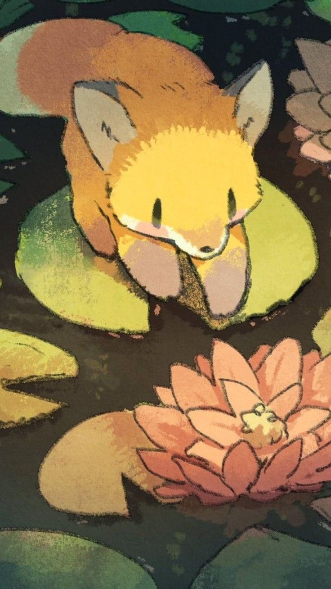
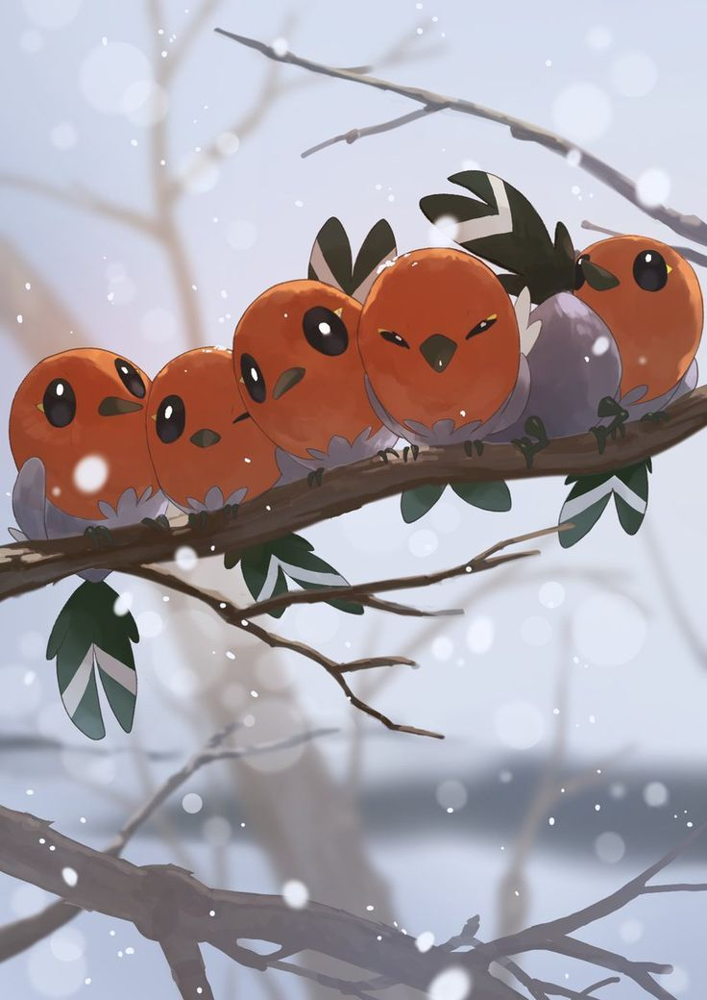
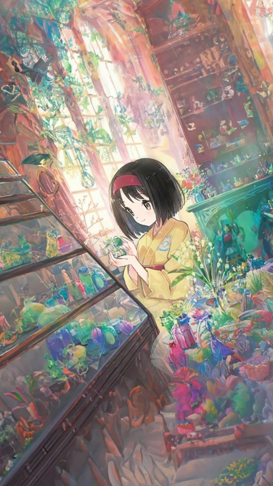
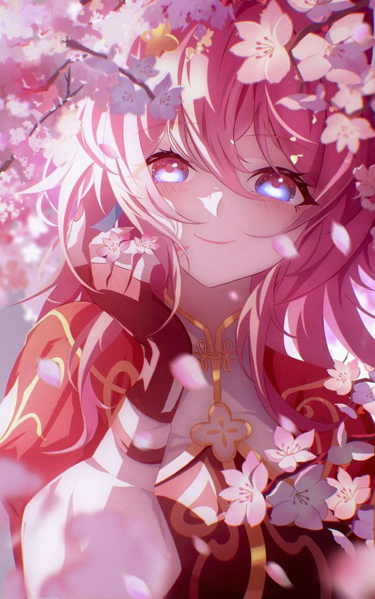
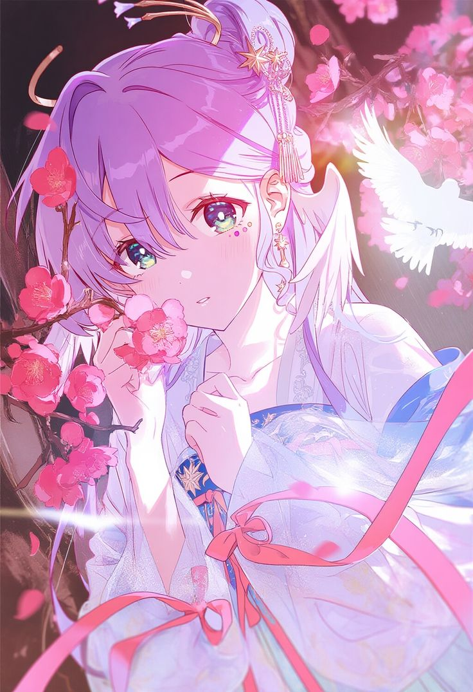
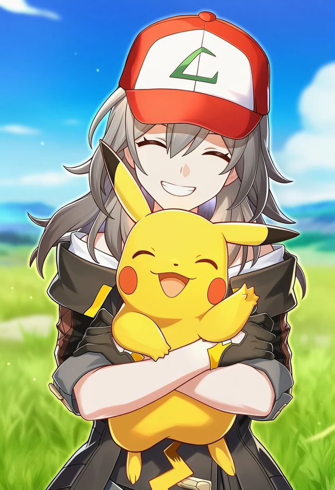

Una obra inspirada en la serenidad natural, donde los tonos cálidos y la estética pictórica transmiten calma y nostalgia.
"Criatura fantástica descansando entre flores cálidas y vegetación suave en una composición inspirada en la naturaleza."

Una escena contemplativa que captura la quietud del invierno mediante iluminación tenue, texturas delicadas y armonía visual.
"Fletchling posados sobre ramas cubiertas de nieve en una escena invernal de atmósfera tranquila y tonos suaves."

La obra explora la conexión entre naturaleza, color y delicadeza, reinterpretando una presencia serena dentro de un entorno floral.
"Ilustración inspirada en Erika rodeada de flores, colores vibrantes y elementos naturales que evocan elegancia y equilibrio."

Los elementos florales y la iluminación acompañan una identidad visual luminosa, delicada y llena de energía expresiva.
"Ilustración inspirada en 7 de Marzo envuelta en pétalos rosados, luz suave y una composición de estética fantástica."

Una pieza orientada a transmitir elegancia, armonía visual y una sensación de belleza suspendida entre lo onírico y lo musical.
"Composición inspirada en Robin acompañada de tonos suaves, flores y una atmósfera etérea de inspiración celestial."

Una fusión creativa entre dos universos icónicos donde nostalgia, aventura y energía positiva convergen en una misma composición.
"Stelle compartiendo escena con Pikachu en una ilustración crossover inspirada en Honkai: Star Rail y Pokémon."